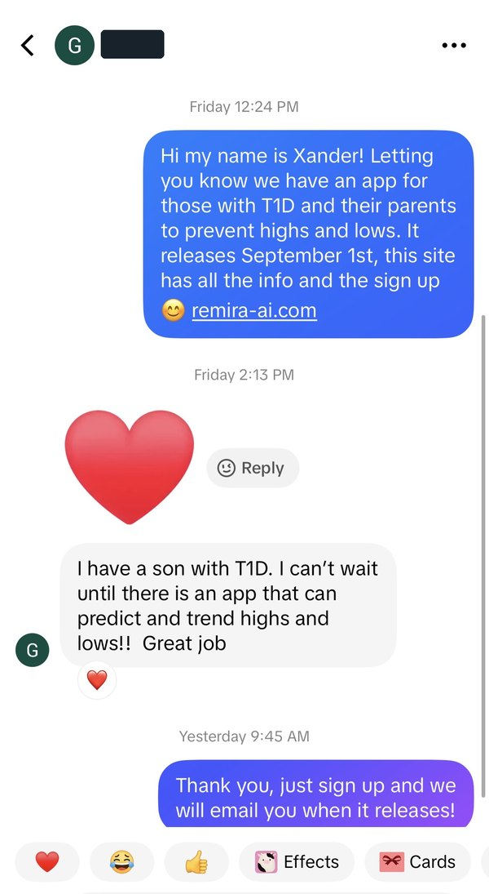

Remira T1D · April 2026 to now
6M views in 60 days. One person.
A Type 1 diabetes app with no budget, no audience, no name. 8.7M views to date, and 6M of them came in a single 60-day stretch after I found the format. I ran every channel myself: content, ad creative, copy, on camera, outreach, the landing page. TikTok and Instagram. Nothing boosted.
Views, likes and profile visits as of October 2026. Everything else as of August 3, 2026.
The creative
Three formats. Three different jobs.
Most founders pick one and wonder why it stalls. Reach, trust and conversion are different problems. One video can't carry all three.
Viral short-formBuys the distribution.
Five to seven seconds, text on b-roll, one emotional claim. Cheap to make, fast to test, and the only thing that reaches people who have never heard of you. Six posts cleared 300K. The top one hit 927K off a single line of copy.
927K · 866K · 537K · 457K · 419K
UGC & on cameraBuys the following.
Stitches with real patients, my own face, longer runtime. This is where a viewer decides if the account is a person or a billboard. One 27-second on-camera post added 1,100 followers. A 1:41 talk held 19.2 seconds of average watch.
1,100 followers · 640 followers
Ad creativeCloses the install.
Store screenshots, landing page, pinned highlights. I wrote and designed all of it. The same asset set you'd hand a paid channel the day you turn one on. Autopilot and Nummo AI have both paid me for the same work.
1,000 installs · 5.0★ · 600 activated
The finding
The smallest video built the biggest audience.
Same five posts, ranked twice. Views on the left, followers on the right. The order almost perfectly reverses. Followers are the half you keep.
Ranked by viewsViews
1Pre-diabetic thirst
0:06 · text on b-roll · 8.6s avg watch
927K
2Worst part of T1D
0:05 · text on b-roll
346K
3Don't ignore T1D
0:27 · on camera · 9.2s avg watch
321K
4Too much insulin
0:18 · UGC stitch
250K
5A talk on night lows
1:41 · on camera · 19.2s avg watch
63K
New followersRanked by followers
1Don't ignore T1D
0:27 · on camera
1,100
2A talk on night lows
1:41 · on camera
640
3Too much insulin
0:18 · UGC stitch
405
4Worst part of T1D
0:05 · text on b-roll
365
5Pre-diabetic thirst
0:06 · text on b-roll
251
The 63K post earned 37× more followers per view than the 927K one. A talking head at 1:41 held 19.2 seconds. A six-second hook held 8.6. You rent reach from the algorithm. Attention is what turns a viewer into an audience.
So I stopped optimizing one number. Short hooks feed the algorithm. UGC and on camera collect the people it delivers. Ad creative closes them. Run all three on purpose and the follower floor between spikes rises instead of dropping to zero. Mine rose every month for four months.
How the installs actually happened
One audience. Two ways in.
Most growth pitches show you one funnel. Build an audience instead of renting clicks and the audience becomes a second one. That one is free forever.
Passive
Content to landing page
The feed does the work. It compounds, and it keeps running after I stop.
Video views8.7M
↓
Profile visits46K
remira-ai.com ↓
Installs~625
≈ 63% of all installs
Active
Direct message to install
A channel that didn't exist until the account had a name.
DMs sent, by hand2,500
no automation, no scraping ↓
Converted to install15%
↓
Installs~375
≈ 37% of all installs
A cold DM from an account nobody recognizes converts at nothing. 15% is what a recognized account converts at. A third of the install base came through a channel the content had to earn first. Of the 1,000 who installed, 600 activated and half the weekly users came back daily.
The account is the real asset, not the views.
A dollar of paid acquisition buys one impression, once. Four months of posting bought a permanent one, and everything downstream of it runs again for free.
Audience you own outright5,000
Library that keeps serving100 posts
Free redistribution to a second platformTikTok + IG
Shares, the audience distributing for you61.8K
Comments, a standing research panel7.7K
Cost to keep it all running$0
Run the same content on both platforms and the second one costs nothing. A post is made once and lives on TikTok, Reels and the pinned highlights. None of it switches off when a budget does.
Method
Why this translates to a company I've never touched.
The obvious objection: it worked because I have Type 1 diabetes. Founder-market fit helped. It wasn't the mechanism, and it was worth less than the ten-million-person ceiling cost me.
Before making anythingI became the target audience on purpose.
I spent weeks training my feed on the niche until the algorithm served me what it serves the customer. Then I built from what I couldn't skip. That's a process, not a biography. It costs two weeks.
What I got wrongTrends and edits do not sell health.
I assumed polished edits and trending sounds would win. They didn't. Nobody comes to their health looking for something trendy. What worked was disturbing, inspiring or controversial. UGC or faceless barely mattered. Emotion was the variable.
The call I defend hardest80% of the videos never show the product.
The For You page is where people are most resistant. Pitching there burns the impression. So the content is about the problem the audience shares, not the app. The ad creative lives on the pinned highlights, the store listing and the landing page, where intent already exists.
What I am actually sellingA brand account, not a spike.
A following is name recognition, a community, and a direct line into 5,000 inboxes nobody can outbid you for. The floor between spikes is the number that matters. It went up every month, on both accounts, without a dollar behind it.
The playbook, portable
What I'd do in your first 30 days.
Weeks 1 and 2
- Train a feed on your category until the algorithm serves me your customer
- Find what your niche reacts to, not what's trending
- Stand up the account, brand, bio and pinned product surface
- Ship 15 posts across all three formats. Read what moves
Weeks 3 and 4
- Lock the format that worked and scale volume against it
- Layer UGC and on camera to turn reach into followers
- Mirror the library to Instagram for free
- Open direct outreach once the name means something
Receipts
Uncropped, straight from the dashboards.
TikTok creator analytics and App Store Connect. The account is public if you want to check.
@remira.t1d · lifetime totals as of August 3, 2026 · now 8.7M views and 1.1M likes
Daily new followers · Apr 27 to Aug 5 · the floor lifts and stays up
Daily views · April 16 to August 2
Top posts by views · 1 through 4
Top posts by views · 5 through 8
Top posts by followers · a different order
On camera, 0:27 · 321K views, 1.1K followers
On camera, 1:41 · 19.2s average watch, 640 followers
Faceless, 0:06 · 927K views, 49.3% full watch, 6.5K shares
App Store listing · 5.0★ / 26 ratings · creative by me

One of 2,500
What a 15% conversion rate looks like up close.
Sent by hand, one at a time, over weeks. No automation, no scraping. TikTok bans for that, and a template reads like one.
This one is a father whose son has T1D. He answered with a heart before he answered with words. That happens when someone has already seen four of your videos and the message is about him, not the product.
This is the pre-launch version, pointing at the signup instead of the App Store. Same message, same channel. It's where the install list came from before there was an install.